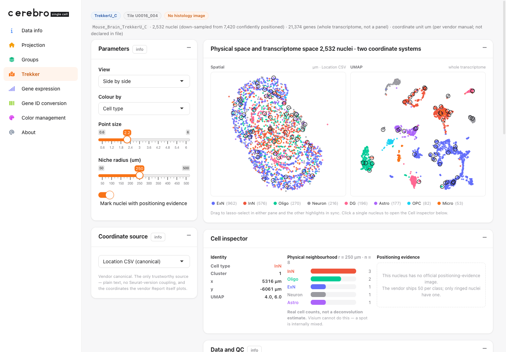

What this guide does
This is an end-to-end, reproducible walk-through of the
Trekker page: what the data is, where it comes from,
what is inside the download, and exactly how the shipped demo
.crb is built from it. Every code block is the real build
recipe (it lives in data-raw/build_trekker_demo.R); it is
shown with eval = FALSE because the raw input is a
multi-gigabyte, access-gated vendor bundle, not something a vignette can
fetch.
The Trekker demo is real measured data —
down-sampled, but not invented. So this guide is also, unavoidably, a
guide to reading it honestly: where the coordinates really live, what
“confidently positioned” does and does not mean, and which numbers are
the vendor’s rather than Cerebro’s.
Build the demo .crb
The rest of this section is
data-raw/build_trekker_demo.R, narrated. It needs
Seurat, Matrix, the magick and
base64enc packages (build-time only), and the in-tree
CerebroNexus (for the new trekker slot on
Cerebro).
Setup
library(Seurat)
library(Matrix)
pkgload::load_all(".", quiet = TRUE) # in-tree class with add/getTrekker()
set.seed(42)
SAMPLE <- "Mouse_Brain_TrekkerU_C"
BASE <- Sys.getenv("TREKKER_OUTPUT_DIR")
f <- function(suffix) file.path(BASE, paste0(SAMPLE, suffix))
N_CELLS <- 2500L # down-sampled nucleus count
Step 1 — read the vendor outputs
The object carries a legacy SlideSeq
@images entry that predates the misc slot, so
any subset() on it errors. We never use
@images (coordinates come from the CSV), so we drop it up
front to make the object subsettable.
so <- readRDS(f("_ConfPositioned_seurat_spatial.rds"))
DefaultAssay(so) <- "SCT"
so@images <- list() # coordinates come from the CSV, not here
bc_all <- colnames(so)
# canonical coordinates (µm) — the vendor Location CSV is the authority
loc <- read.csv(f("_Location_ConfPositionedNuclei.csv"))
names(loc)[1] <- "barcode"
loc <- loc[match(bc_all, loc$barcode), ]
cx <- loc$SPATIAL_1
cy <- loc$SPATIAL_2
um <- Embeddings(so, "umap")
clab <- as.integer(as.character(so@meta.data$seurat_clusters)) # 0-based cluster id
Step 2 — cell types
The object ships 18 unnamed Louvain clusters. They were labelled once
by marker z-score argmax over canonical mouse-brain markers, and
hard-coded (indexed by cluster id) so the build is deterministic.
Clusters without a clear marker winner are honestly left
Neuron, not over-called.
# Snap25/Slc17a7 -> ExN, Gad1/Gad2 -> InN, Plp1/Mbp -> Oligo, Aqp4/Gfap -> Astro,
# Cx3cr1/C1qa/Csf1r -> Micro, Pdgfra -> OPC, Prox1 -> DG
CELLTYPE_BY_CLUSTER <- c(
"ExN", "InN", "Oligo", "ExN", "Astro", "InN", "DG", "ExN", "ExN",
"Neuron", "OPC", "Micro", "Neuron", "DG", "ExN", "Neuron", "ExN", "Neuron"
)
Step 3 — positioning QC and upstream Moran’s I
QC is parsed straight from summary_metrics.csv, keeping
the vendor’s own field names; a metric that is absent stays absent
(never replaced by 0). The Moran’s I table is the vendor’s — labelled
“Upstream” on the page and never mixed with Cerebro’s own.
sm <- read.csv(f("_summary_metrics.csv"))
mv <- setNames(as.character(sm$Value), sm$Metrics)
# qc <- list(sample_id = mv[["Sample_ID"]], tile_id = mv[["Tile_ID"]],
# total_nuclei = ..., conf = ..., pct_2plus = ...,
# o_1 = ..., salv_2 = ..., salv_3 = ..., n_0 = ..., ...) # see the script
mi <- read.table(f("_variable_features_spatial_moransi.txt"),
header = TRUE, sep = "\t")
mi <- mi[order(-mi$MoransI_observed), ] # top spatially variable genes
Step 4 — positioning-evidence images
cells_1_coordinates_assigned/<BC16>.jpeg is a
confidently-positioned nucleus’s evidence image; the file stem is the
16-character nucleus barcode, so <BC16>-1 is the
object barcode. Each image is down-scaled and base64-embedded so the
whole demo — expression and evidence — stays in the one
self-contained .crb.
ev_dir <- file.path(BASE, "cell_bc_plots")
ev_file <- list.files(file.path(ev_dir, "cells_1_coordinates_assigned"),
pattern = "\\.jpe?g$", full.names = TRUE)
ev_bc <- paste0(sub("\\.jpe?g$", "", basename(ev_file)), "-1")
encode_jpeg <- function(path, max_px = 620L, quality = 68L) {
img <- magick::image_read(path)
img <- magick::image_resize(img, paste0(max_px, "x", max_px, ">"))
raw <- magick::image_write(img, format = "jpeg", quality = quality)
paste0("data:image/jpeg;base64,", base64enc::base64encode(raw))
}
Step 5 — sub-sample (whole genes, force-include evidence)
The object is 21,374 genes × 7,420 nuclei. Embedding
whole-transcriptome expression for all of them blows a sensible size
budget (measured: ~3.8 MB at 2,500 nuclei, before images). “Whole
transcriptome” is the point, so we keep all genes and
down-sample nuclei instead — stratified by cluster —
and force-include the 50 nuclei that carry an evidence
image, so the drill-down still works.
strat <- integer(0)
for (lv in sort(unique(clab))) {
w <- which(clab == lv)
k <- max(1L, round(N_CELLS * length(w) / length(clab)))
strat <- c(strat, sample(w, min(k, length(w))))
}
idx <- sort(unique(c(strat, match(ev_bc, bc_all)))) # + the evidence nuclei
sub_bc <- bc_all[idx]
Step 6 — export a Cerebro object and attach the trekker
slot
We build an ordinary Cerebro object with
exportFromSeurat() (whole- transcriptome expression + UMAP
+ cluster/celltype groups) — this is what
powers gene colouring on the page. Then we attach a trekker
slot with everything else the bespoke page needs.
sub <- subset(so, cells = sub_bc)
sub$celltype <- CELLTYPE_BY_CLUSTER[as.integer(as.character(sub$seurat_clusters)) + 1L]
sub$cluster <- factor(as.integer(as.character(sub$seurat_clusters)))
sub$nUMI <- sub$nCount_SCT; sub$nGene <- sub$nFeature_SCT
sub <- DietSeurat(sub, assays = "SCT", dimreducs = "umap") # drop dense scale.data
exportFromSeurat(
sub, assay = "SCT", slot = "data",
file = "inst/extdata/examples/demo_trekker.crb",
experiment_name = "Trekker mouse brain (TrekkerU_C, demo)",
organism = "mm",
groups = c("cluster", "celltype"), main_group = "celltype",
nUMI = "nUMI", nGene = "nGene"
)
The trekker slot holds the page’s content. Every vector
is unname()d — a named R vector serialises to a
JSON object (barcode → value), but the client indexes these positionally
as arrays. The barcodes field lets the server pull a gene’s
expression aligned to these exact points, regardless of the expression
matrix’s internal column order.
trekker <- list(
meta = list(n_cells = length(idx), n_cells_full = length(bc_all),
n_genes_obj = nrow(so), unit = "um (per manual; not declared)"),
qc = qc, # vendor field names (Step 3)
barcodes = unname(sub_bc), # SAME order as the arrays below
x = unname(round(cx[idx], 2)), y = unname(round(cy[idx], 2)), # canonical µm
ux = unname(round(um[idx, 1], 3)), uy = unname(round(um[idx, 2], 3)), # UMAP
clusters = unname(clab[idx]),
celltype = CELLTYPE_BY_CLUSTER, # cluster id -> label
moran = moran, # upstream vendor Moran's I
evidence = evidence, # {cell, bc, img=base64}
qc_examples = qc_examples # one image per excluded class
)
crb <- readRDS("inst/extdata/examples/demo_trekker.crb")
crb$addTrekker(trekker)
saveRDS(crb, "inst/extdata/examples/demo_trekker.crb", compress = "xz")
The whole build is one command:
# TREKKER_OUTPUT_DIR=/path/.../output Rscript data-raw/build_trekker_demo.R
# -> inst/extdata/examples/demo_trekker.crb (~4.7 MB, 2,532 nuclei x 21,374 genes,
# 50 embedded evidence images)
What the page shows
Physical space and transcriptome space, side by
side. Every nucleus has both a spatial and a UMAP position, so
the two panes are linked: lasso-select in one and the other highlights
in sync. Colour by cell type, cluster, or any gene.

Whole-transcriptome gene colouring. Pick (or type)
any of the ~21k measured genes. Here Plp1 — an oligodendrocyte
marker — lights up the Oligo cluster in the UMAP and its scattered cells
in tissue, a quick sanity check that the two coordinate systems refer to
the same nuclei.

Data and QC — in the vendor’s own words. Positioning
class distribution, the salvage caveat, provenance (including a
missing pipeline version, kept missing), the
positioning-evidence gallery, and the upstream Moran’s I table.